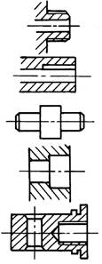
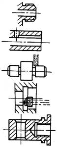
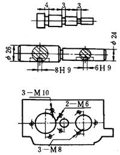
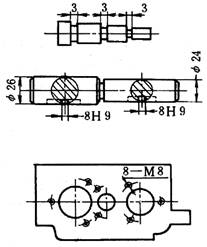
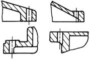
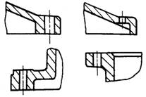
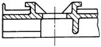
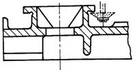
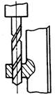
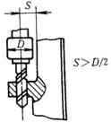

注 意 事 项 |
图 例 |
说 明 |
|
改 进 前 |
改 进后 |
||
应考虑刀具退出时所需的退刀槽 |
 |
 |
1．保证刀具能自由退刀 |
当尺寸差别不大时，零件各结构要素，如沟、槽、孔、窝等，应尽可能一致 |
 |
 |
1．减少刀具种类 |
应考虑刀具能正常地进刀和退刀 |
 |
 |
尽可能避免在斜面上钻孔和钻不完整孔，以防止刀具损坏和提高加工精度及切削用量 |
 |
 |
应保证砂轮自由退出和加工的空间 |
|
尽可能采用标准刀具 |
 |
 |
尽量不采用接长钻头等非标准刀具 |